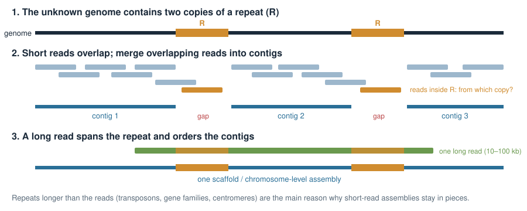
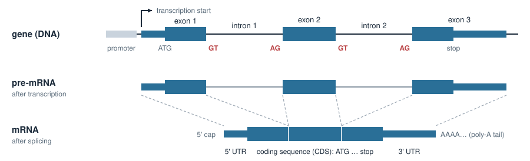
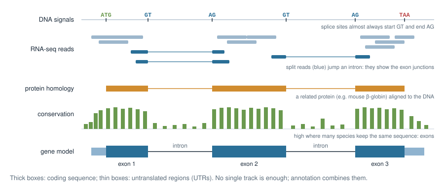
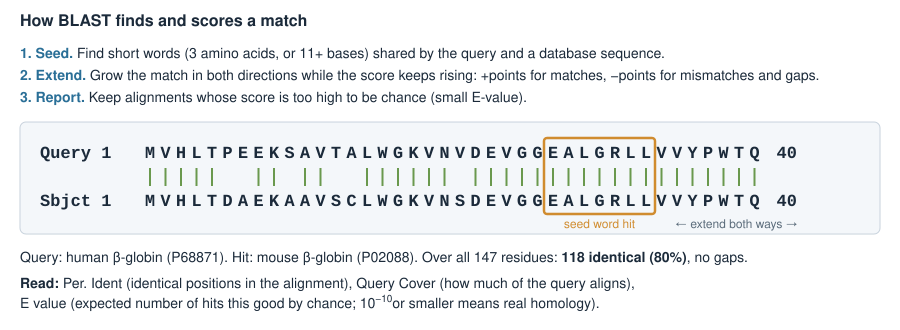
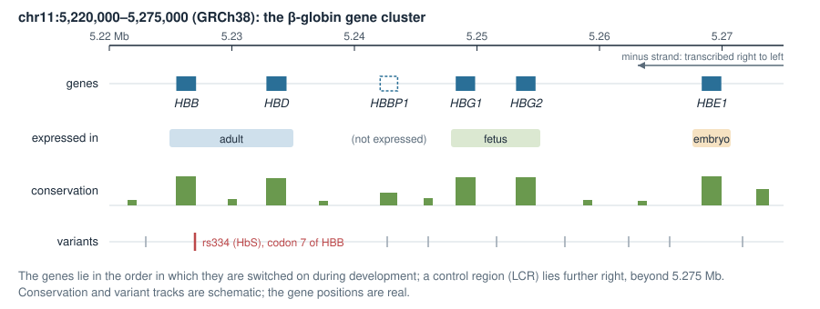
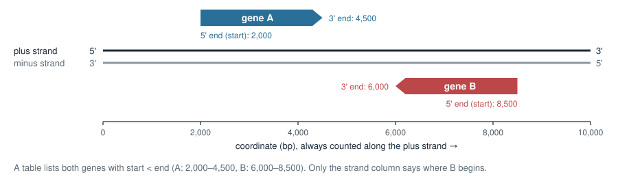
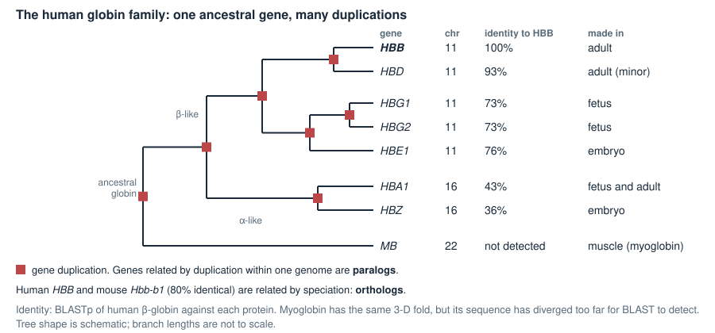
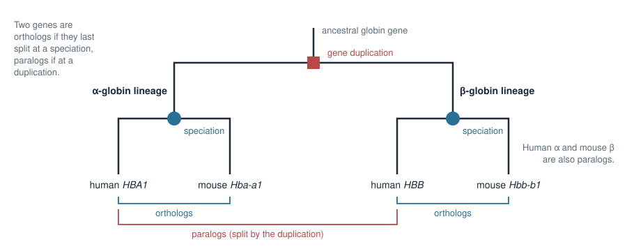

Part 4: Genome analysis. From a sequenced genome to a map of its genes: ORFs, evidence, BLAST, browsers and gene families
Basic and molecular genetics (5MO104)
About this lecture
The last unit read DNA in pieces: one PCR product, or millions of short reads. A genome project puts the pieces together into chromosomes, and annotation marks what is on them: where the genes are, what they encode, and which genes in other species they resemble.
Assembly: from reads to contigs to chromosomes, and why repeats make it hard.
Finding genes: open reading frames (ORFs) in bacteria; exons, splice signals and codon bias in eukaryotes.
Evidence: RNA-seq, homology (BLAST: how a hit is scored, what the E value means, and what a hit does and does not prove) and conservation.
Genome browsers: one gene seen as stacked tracks; coordinates and strands.
Comparative genomics and gene families: orthologs and paralogs on a gene tree, with the globins as an example.
The running example is again HBB, now seen in its genomic neighbourhood.
Book: Hartwell, Genetics: From Genes to Genomes, chapter on genome sequencing and annotation.
Genome projects: a short history
Year
Genome
Size
Why it mattered
1977
phage φX174
5.4 kb
first DNA genome sequenced (Sanger)
1995
Haemophilus influenzae
1.8 Mb
first free-living organism
1996
Saccharomyces cerevisiae
12 Mb
first eukaryote
1998
Caenorhabditis elegans
100 Mb
first animal
2000
Drosophila melanogaster, Arabidopsis thaliana
140 Mb, 120 Mb
genetic model organisms
2001–2004
human (Human Genome Project)
3.1 Gb
reference genome, about 20,000 protein-coding genes
2022
human, telomere to telomere (T2T)
3.1 Gb
first gap-free human genome, with centromeres
Today a bacterial genome costs less than a lab course, and projects aim at all eukaryotic species.
Assembly: putting the reads together

Reads that overlap come from neighbouring positions; merging them gives contigs (contiguous sequences).
A repeat longer than the reads cannot be placed: its reads fit at every copy. The assembly breaks there.
Long reads (10–100 kb) span repeats and join contigs into scaffolds and whole chromosomes.
Assembly by overlap, step by step
Four 10-base reads, in the order the sequencer gave them:
GCTTAACGCA GATTACAGGC TAACGCATGC ACAGGCTTAA
Find a read whose end matches the start of another: GATTACAGGC ends with ACAGGC, and ACAGGCTTAA starts with it (6-base overlap).
A pocket-sized long-read sequencer (Oxford Nanopore MinION). Reads of tens of kb span most repeats.
What does annotation mean?
Kind
Question
Example for HBB
Structural
Where are the genes, exons, start and stop codons?
chr11:5,225,464–5,229,395, minus strand, 3 exons
Functional
What does the product do?
β-globin, the β chain of adult haemoglobin, carries O2
Relational
Which genes is it related to?
paralogs HBD, HBG1, HBA1 …; ortholog mouse Hbb-b1
The human genome has about 20,000 protein-coding genes (20,107 in Ensembl release 116), plus many genes for non-coding RNAs.
Protein-coding sequence is only about 1–2% of the genome.
Annotation is a model built from evidence, and it changes between releases. Always note the release you used.
Finding genes in bacteria: open reading frames
An open reading frame (ORF) is a stretch from a start codon (ATG) to the next in-frame stop codon (TAA, TAG, TGA) with no stop in between.
DNA has six reading frames: three on each strand.
In random DNA, 3 of 64 codons are stops, so a stop comes on average every 64/3 ≈ 21 codons.
The chance of 100 codons in a row without a stop is (61/64)100 ≈ 0.008. A long ORF is unlikely by chance, so it is probably a gene.
Bacterial genes have no introns and are densely packed (about 1 gene per kb), so long ORFs find most of them.
Worked example: six frames by hand
Sequence: 5’-CATGAAACCCTGGTAAGC-3’ (18 nt). Its reverse complement: 5’-GCTTACCAGGGTTTCATG-3’.
Frame
Codons
Protein
+1
CAT GAA ACC CTG GTA AGC
H E T L V S
+2
ATG AAA CCC TGG TAA
M K P W stop: a 4-codon ORF
+3
TGA AAC CCT GGT AAG
stop N P G K
−1
GCT TAC CAG GGT TTC ATG
A Y Q G F M
−2
CTT ACC AGG GTT TCA
L T R V S
−3
TTA CCA GGG TTT CAT
L P G F H
Frames +1, +2, +3 start at bases 1, 2 and 3 of the given strand; −1, −2, −3 start at bases 1, 2 and 3 of the reverse complement, read 5’→3’.
Leftover bases at the end that do not make a full codon are ignored.
The ORF in frame +2 is real but tiny: 4 codons without a stop happen by chance most of the time. Only long ORFs are evidence.
How long must an ORF be?
The chance that n codons of random DNA contain no stop is (61/64)n:
ORF length n (codons)
20
66 (λ cro)
100
200
P(no stop in n codons)
0.38
0.042
0.0082
6.8 × 10−5
Expected number of chance ORFs = (number of open stretches) × P(long enough). In six frames there is one stop per 64/3 codons, so random DNA as long as phage λ (48,502 bp) has about 6 × 48,502 / 64 ≈ 4,500 stops, and so about as many open stretches:
≥ 100 codons: 4,500 × 0.0082 ≈ 37 by chance;
≥ 200 codons: 4,500 × 6.8 × 10−5 ≈ 0.3 by chance.
A 200-codon ORF is strong evidence; a 66-codon gene like cro needs other evidence (a ribosome-binding site, homology, RNA).
Try it: six-frame ORF finder
Eukaryotic genes are harder to find
Feature
Problem for a gene finder
Signal that helps
Introns
the ORF is split into exons, often short
splice sites: introns start with GT and end with AG
Large intergenic regions
genes are far apart (human: about 6 genes per Mb)
promoters, CpG islands near the 5’ end
Alternative splicing
one gene, several transcripts
RNA evidence
Pseudogenes
look like genes but are broken
stop codons or frameshifts in the “ORF”
Codon bias
each species prefers some synonymous codons in real genes
HBB is 1.6 kb from transcription start to end but codes for only 147 amino acids (444 nt): 3 exons, 2 introns.
Anatomy of a eukaryotic gene

Gene = transcribed region: exons + introns. mRNA = exons only. CDS = ATG to stop, a part of the mRNA. UTRs = the exon parts before the ATG and after the stop.
The first exon usually starts with UTR, so the ATG can lie well inside exon 1, and the last exon often ends with a long 3’ UTR.
Evidence: RNA, protein and conservation

Modern annotation pipelines (Ensembl, NCBI RefSeq) combine RNA-seq reads (where transcripts are), protein homology (a known protein from another species aligned back to the DNA), conservation across species, and ab initio signals (ORFs, splice sites). Curators check difficult genes by hand.
Homology search with BLAST

Homologous genes share an ancestor. When two sequences are much more similar than chance allows, we infer homology, and often a similar function.
Step 1: scoring an alignment
Each aligned pair gets a score from a substitution matrix. For proteins BLAST uses BLOSUM62: positive for identical or similar amino acids, negative for unlikely swaps. Residues 2–11 of human vs mouse β-globin:
Human
V
H
L
T
P
E
E
K
S
A
Mouse
V
H
L
T
D
A
E
K
A
A
total
BLOSUM62
+4
+8
+4
+5
−1
−1
+5
+5
+1
+4
+34
Identities score differently: rare residues (W +11, H +8) more than common ones (A, L, V +4).
A similar pair still scores: S/A +1, and elsewhere I/V +3, D/E +2, K/R +2.
Gaps cost points: a gap of k residues costs 11 + k (BLASTp defaults).
For DNA the scheme is simpler, e.g. +1 per match and −2 per mismatch.
Step 2: from score to E value
BLAST converts the raw score into a bit scoreS (a normalised score that does not depend on the matrix). The E value is then
E \approx m \times n \times 2^{-S}
with m = query length and n = total length of the database. Query 147 aa, database 2 × 108 residues (roughly the size of Swiss-Prot): m × n ≈ 3 × 1010.
Bit score S
35
50
100
200
E value
≈ 1
3 × 10−5
2 × 10−20
2 × 10−50
Every extra bit halves E. Long, good alignments get astronomically small E values.
A database twice as large doubles E for the same alignment: E is a count of expected chance hits, not a property of the two sequences alone.
E ≈ 1 means “one hit this good expected by chance”: not evidence of anything.
Which BLAST, and how to read it
Program
Query
Database
Use
blastn
DNA
DNA
identify a read or PCR product (the mystery read in the last unit)
blastp
protein
protein
find homologous proteins
blastx
DNA, translated in 6 frames
protein
what might this DNA encode?
tblastn
protein
DNA, translated in 6 frames
find unannotated genes for a protein in a genome
Column
Meaning
Rule of thumb
Per. Ident
% identical positions in the aligned region
high identity over a short stretch can still be chance
Query Cover
% of the query in the alignment
low cover: only one domain matches
E value
hits this good expected by chance in this database
< 10−10: homologous; > 0.01: be careful
Proteins detect distant relatives better than DNA: the code is redundant, and similar amino acids score positively.
Step 3: what a hit means, and what it does not
You see
You may conclude
You may not conclude
tiny E value (10−50) over most of the query
the two are homologous
that they have the same function (paralogs often differ)
high identity (70%) over 15 residues, E ≈ 2
nothing: short matches arise by chance
homology
~25–30% identity over the whole protein, small E
probably homologous (“twilight zone”: check E)
no significant hit
BLAST found no detectable similarity
that the genes are not homologous (myoglobin vs β-globin)
query cover 40%
one domain is shared
that the whole proteins are related
the top hit in another species
a good ortholog candidate
that it is the ortholog: check gene trees and synteny
Check yourself. A 300-aa query gives hit A: 98% identity, query cover 15%; hit B: 32% identity, query cover 95%, E = 10−40. Which is the better evidence that the whole protein has a homolog?
Genome browsers: tracks on a coordinate

The UCSC Genome Browser and Ensembl show a region of a chromosome with tracks stacked underneath: genes and transcripts, RNA-seq, conservation, variants (dbSNP, ClinVar), regulatory elements. Always check the assembly (GRCh38 here); coordinates differ between assemblies.
Coordinates and strands

Coordinates count along the plus strand, from the tip of the short arm. Tables give start < end for every gene.
A plus-strand gene starts (5’ end, transcription start) at its low coordinate; a minus-strand gene at its high coordinate.
“Upstream” means towards the gene’s 5’ end: lower coordinates for a plus-strand gene, higher for a minus-strand gene.
In a browser, arrows or chevrons on the gene show its direction. HBB and the other β-like globin genes point left: minus strand.
Comparative genomics: conservation means function
Compare genomes of related species: what stayed the same is probably important; what differs may explain differences between species.
Orthologs (same gene in different species) usually keep the same function, so model organisms tell us about human genes: mouse Hbb-b1 vs human HBB, 80% identical proteins.
Synteny: blocks of genes stay in the same order on chromosomes of related species. A gene’s neighbours help to identify its ortholog.
Only a few percent of the human genome is under strong evolutionary constraint, but that includes many non-coding elements, such as enhancers.
Gene families: duplication and divergence

Gene duplication gives a spare copy, which can keep the old function, take a new one (fetal vs adult haemoglobin) or decay into a pseudogene (HBBP1). Related genes in one genome are paralogs; the same gene in two species are orthologs.
Orthologs and paralogs on a gene tree

Find the node where two genes last split. A speciation node makes them orthologs; a duplication node makes them paralogs, even when the two genes are in different species.
The human genome in numbers
From the Ensembl BioMart export used in the R exercise (release 116, GRCh38):
Measure
Value
Protein-coding genes (chromosomes 1–22, X, Y, MT)
20,107
Average density
6.5 genes per Mb
Densest chromosome
19: 25 genes per Mb
Sparsest
Y: 1.1 per Mb; 13: 2.8; 18: 3.3
Median gene length (first to last base of all transcripts)
29 kb
Longest genes
RBFOX1 2.47 Mb, CNTNAP2 2.30 Mb, … DMD 2.24 Mb
Gene density differs ten-fold between chromosomes. The trisomies that are compatible with survival to birth (13, 18, 21) involve gene-poor chromosomes.
Common mistakes
Mistake
Correct
“These proteins are 80% homologous.”
Homology is yes or no; say 80% identical.
“No BLAST hit, so the genes are unrelated.”
BLAST may simply not detect old homologs (myoglobin).
“The top hit in mouse is the ortholog.”
Usually, but check: duplications and gene losses can mislead.
“The gene starts at its lowest coordinate.”
Only on the plus strand; a minus-strand gene starts at its highest.
“The longest ORF is the gene, and its first ATG is the start.”
ORFs are candidates; starts are often a later ATG (cII in the demo).
“Exons = coding sequence.”
Exons also contain the UTRs.
“Gene start and end in a table = the canonical transcript.”
Table coordinates span all transcripts, including rare long ones.
“The annotation is a fact.”
It is a model from evidence; note the release (Ensembl 116, GRCh38).
Summary
Concept
Key fact
Assembly
overlapping reads → contigs → scaffolds; repeats longer than reads break assemblies; long reads help
Annotation
structural (where), functional (what), relational (related to what); a model that changes between releases
ORF
ATG to stop with no stop between; six frames; P(no stop in n codons) = (61/64)n; expected chance ORFs = stretches × P
Eukaryotic gene
exons (incl. UTRs) and introns (GT…AG); mRNA = exons; CDS = ATG to stop; found with RNA-seq, homology, conservation
BLAST
seed, extend, score (BLOSUM62); E ≈ m n 2−S; read identity, coverage and E value; no hit ≠ no homology
Genome browser
tracks on a plus-strand coordinate; a minus-strand gene starts at its high end; note the assembly (GRCh38)
Orthologs / paralogs
last split at a speciation / at a duplication (even across species)
Human genome
~20,000 protein-coding genes, 1–2% coding, 6.5 genes per Mb on average
Where this leads
Exercise: find ORFs in the demo, BLASTp the β-globin protein, look at the globin locus in Ensembl or UCSC, and export a gene list from BioMart.
Exercise in R: read the BioMart export with read_tsv(), count genes per chromosome, join with chromosome lengths and plot gene density.
Next: Genomic variation. Annotation describes one reference genome; sequencing many people shows how genomes differ: SNPs such as rs334, indels and copy-number variants.
Part 5: Rearrangements and aneuploidy. Gene density helps to explain which aneuploidies are survivable.